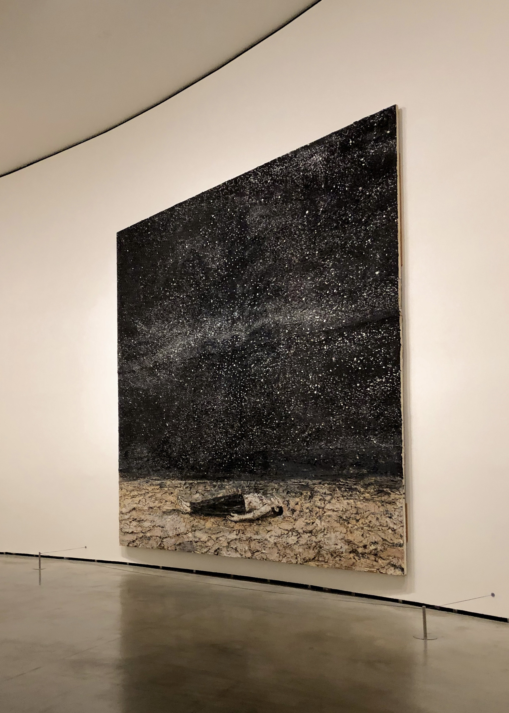
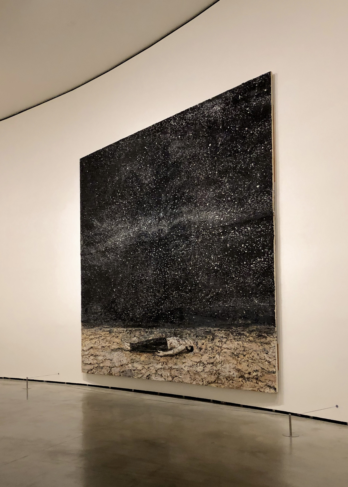
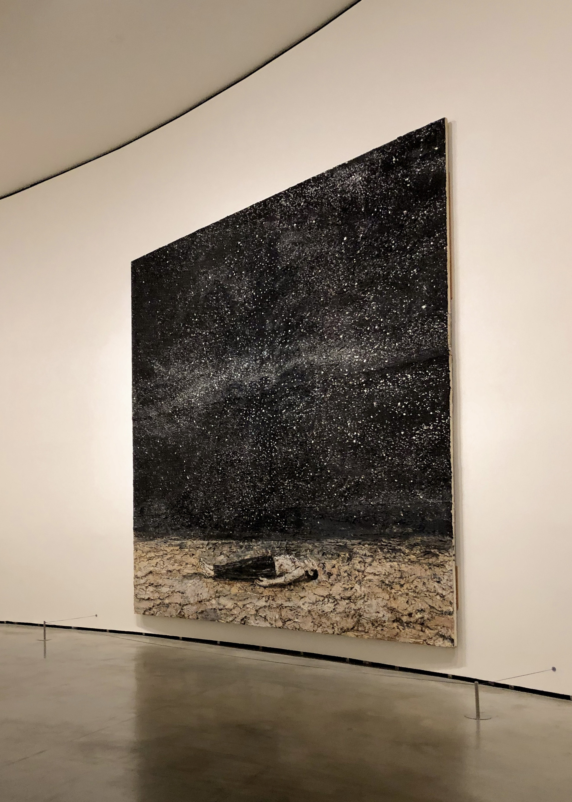

I am a student currently pursuing a Bachelor in Business Administration at ESSEC Business School. Creative and an interested in exploring the world, I'm always looking for new opportunities to learn and connect with people.
As a music, litterature and cinema enthusiast, I am always looking for new ways to engage with storytelling. Whether it's discovering new musicians, delving into foreign films, or getting lost in a good book, I find endless inspiration in the power of creative expression.
RADIO STATIONWith a passion for urban culture and an eye for detail, I love to explore the world through photography and graphic design.

My goal is to specialize in the management of arts and creative industries. With a strong interest in producing my own music, I am also committed to learning the skills necessary to turn my ideas into reality. Beyond this, I'm always eager to expand my cultural horizons, whether it's through travel, language learning, or exploring different forms of artistic expression.